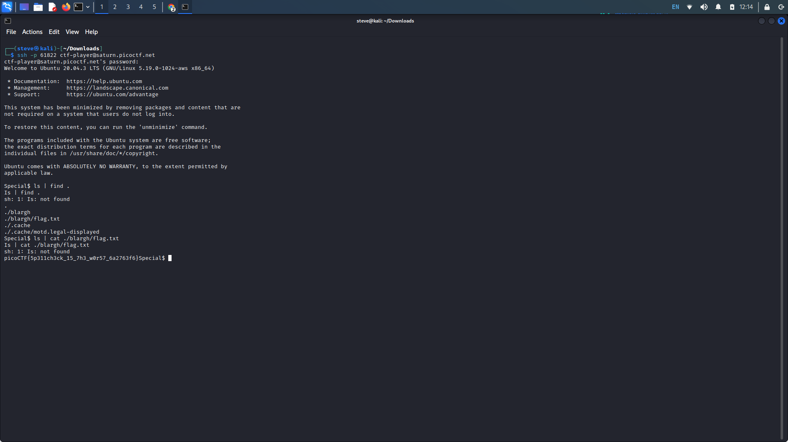

Special
Description: Don't power users get tired of making spelling mistakes in the shell? Not
anymore! Enter Special, the Spell Checked Interface for Affecting Linux. Now, every word is properly
spelled and capitalized... automatically and behind-the-scenes! Be the first to test Special in beta,
and feel free to tell us all about how Special streamlines every development process that you face. When
your co-workers see your amazing shell interface, just tell them: That's Special (TM) Start your
instance to see connection details.
Writeup: Upon launching the instance, connecting to the server, and attempting to try
standard commands, notice...
- Every first letter is capitalized ( e.g. clear = Clear)
- Every word in our command is auto corrected ( e.g. cd = Ad)
Using the pipe ("|") would help us achieve these goals.Our first command preceding the pipe can be anything, but our second command should be a find command. We can use the find . command to search through our working directory. Here we see the flag.txt file located in the /blarch directory.
Using the same method, this time cat the flag.txt file.
